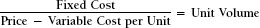

CHAPTER NINE

Analysis of Business Profitability
The discussion in this chapter will focus on the factors that determine the profitability of individual products and help us to improve the decisions that we make concerning these products. We will measure and evaluate the factors that determine the profitability of a product, including:
- Product price
- Unit volume sold
- Costs, both fixed and variable
- Profitability
The financial tool used to achieve these goals is called breakeven analysis.
We begin our discussion by looking at the operating budget for Raritan Manufacturing Company, which is presented in Exhibit 9-1. Raritan has established revenue, spending, and profit targets.
Exhibit 9-1. Raritan Manufacturing Company Annual Budget
Note that the costs are divided into major categories and also separated into their fixed and variable components. Identifying which costs are fixed and which are variable is very valuable for effective decision making. To keep things simple, we will assume that Raritan Manufacturing Company is a one-product business. All of the basic principles of this analysis are equally valid for a multiproduct business. Most of these principles are also applicable to a service business; some of the terminology and processes differ, but conceptually the analyses are the same. The analysis that a manufacturing company develops is called a standard cost system. This is an accounting-oriented mechanism that attempts to identify how much the company will spend during the budget year under different volume assumptions. In the financial services industries, this process is called a functional cost analysis.
After the business has been analyzed using the concepts of breakeven analysis, the actual performance is evaluated as it takes place. This is often called variance analysis. Variance analysis provides management with the ability to evaluate actual results against what was expected when the budget was prepared. This both provides performance accountability and contributes to the learning process. It enables management to determine who is and who is not accomplishing the desired goals. Also, budget assumptions and forecasts can be retroactively evaluated.
Chart of Accounts
Almost every company has a numerically based accounting system that assigns a series of code numbers to every department. This is very helpful for analytical purposes, and is also necessary to comply with generally accepted accounting principles (GAAP). This system ensures that all similar expenses are recorded in the same manner. When accounting transactions are added up at the end of the month or the year, the company can be confident that all direct labor has been recorded in one account, all travel expenses in another, and so on for trade shows, advertising, and every other expense. There is no other mechanism that will help us determine how much is actually being spent in each category, which is certainly necessary information. Also, one of the GAAP requirements is consistency. The chart of accounts provides that as well. Note that the five categories that Raritan Manufacturing Company uses in its budget are summaries of perhaps one or two hundred cost and expense codes. And they are only examples. Your company will probably use different categories and may even use somewhat different terminology.
Once the chart of accounts has been established, the accountants will examine each and every individual cost category in order to attempt to determine whether the cost is fixed or variable. They will often reach simplifying conclusions.
Fixed Costs
Fixed costs are costs that will be the same regardless of the volume of products produced. They are regular and recurring. The amount spent will not change if volume increases or decreases during a given period of time. Among the costs included in this category are staff expenses, administration, rent, machinery repair, and management salaries. Note that just because a cost is identified as fixed, this does not mean that it cannot change. Rent can change, as can salaries, employee benefits, and even advertising. These are fixed costs because the amount spent is not volume-driven, although it may be volume-motivated. Advertising and trade shows create revenue, presumably. If this is true, then perhaps a forecast of weak sales should lead to an increase in these marketing investments. Telephone and travel are examples of other expenses that may increase when business is soft. Customers may be called and visited more frequently.
Development of Fixed-Cost Estimates
It is estimated that during the budget year, Raritan Manufacturing Company will spend a total of $135,000 for costs that are identified as fixed. This includes:
| Factory Overhead | $40,000 | |||
| Administration | 45,000 | |||
| Distribution | 50,000 | |||
| Total Estimated Fixed Costs | $135,000 |
Variable Costs
These costs are volume-driven. They will increase or decrease in response to changes in production and distribution volume. Some of the costs in this category are direct labor (production labor), materials (components of the product), and some administrative and distribution costs.
Development of Variable-Cost Estimates
Estimates of variable costs are developed with the assistance of manufacturing and engineering analyses of the production facility and administrative departments. Each of the per-unit costs is then multiplied by the expected number of units to determine the estimates of variable costs, by category and in total. This is described as follows.
Material estimates are based upon engineering specifications, some analysis of production efficiencies, and product mix. Levels of waste and quality rejects are based upon past experience, subject to hoped-for and engineered improvements. After consultation with manufacturing staff and, preferably, even the people who actually build the product, it is estimated that the material cost per unit will be:
$5 × budgeted 10,000 units = $50,000 materials budget
Direct labor is a very complex cost to estimate. Total expenditures in this area may be affected by:
- The use of manual labor versus technology in production
- Outsourcing versus internal manufacture/assembly
- Efficiency
- The number of shifts planned
- Employee training and turnover
- Forecast length of production runs
- Whether the product is market-driven (made to order) or production-driven
- Planned overtime and weekend shifts
- Premium pay for performance agreements
Other Expenses
The expenses other than direct labor and materials—factory overhead, administration, and distribution—have both fixed and variable components. The basic premise espoused by the accounting department and others is that while a portion of these expenses is fixed, the balance will increase or decrease along with the volume experienced by the company.
There is serious controversy concerning this conclusion, especially during an individual budget year, when the managers responsible will argue that their costs are essentially fixed. The accounting department would not increase or decrease the number of its own people on a week-to-week basis depending on the number of invoices that have to be sent out. Trucks must complete their delivery routes, whether they are entirely or partially full. Managers should examine the standards used by their company and evaluate whether the behavior assumed by the cost system agrees with their perception of how their costs really behave.
Taking these issues into account, Raritan Manufacturing has made the following estimates of the variable-cost portion of these expenses.
| Forecast | Variable | ||
| Cost Category | Cost per Unit | Volume (units) | Budget |
| Factory Overhead | $15 | 10,000 | $150,000 |
| Administration | 2 | 10,000 | 20,000 |
| Distribution | 3 | 10,000 | 30,000 |
In summary, Raritan Manufacturing’s budget is as follows:
Variable cost: $35 per unit × 10,000 units = $350,000
| $135,000 | (estimated fixed costs) | |||
| +350,000 | (estimate of variable costs at 10,000 units) | |||
| $485,000 | Total costs in budget |
The budget is summarized at the bottom of the exhibit 9-1. The per-unit profit is called contribution margin.
Breakeven Calculation
Companies should know the volume they need to achieve in order to reach breakeven. This information should be available by product, or at least by class of product. The breakeven point may be of purely academic interest, or it might have strategic importance, either at present or in the future. It is particularly significant for very new and, at the other end of the life-cycle spectrum, very mature products. Before we get to mathematical formulas, some theory will be helpful.
Conceptually, if Raritan sold no product, it would lose $135,000, which is the fixed-cost commitment. Each time it sells a single unit, it generates $50 in cash. However, before the unit can be sold, it must be manufactured at a cost of $35. The difference between the selling price and the variable cost per unit is called the contribution margin. Therefore, the number of units necessary to break even is the number of “contributions” necessary to cover the fixed cost. The formula is as follows:

The formula can be adapted to calculate the number of units that need to be sold to achieve any desired amount of profit by including profit in the formula, as follows:
The breakeven point for Raritan Manufacturing is:
At 9,000 units, the income statement will be:
| Revenue | (9,000 × $50) | $450,000 | |||
| — Variable Cost | (9,000 × $35) | — 315,000 | |||
| = Contribution Margin | (9,000 × $15) | $135,000 | |||
| — Fixed Cost | — 135,000 | ||||
| = Profit | $ 0 |
Now that we know the breakeven volume, there are many valuable observations that we can make.
Analysis 1
Every unit sold will result in a gross profit (the same thing as contribution margin in this discussion) of $15. At 9,000 units, the company has generated enough gross profit to pay for the fixed cost of $135,000.
$135,000 = 9,000 × $15
Above 9,000 units, since the fixed costs are already paid for, every additional unit sold results in a profit increase of $15. Therefore, if volume were 9,500 units, profit would be $7,500, as follows:
500 units (above breakeven) × $15 = $7,500
The complete income statement would be:
| Revenue | (9,000 × $50) | $475,000 | |||
| — Variable Cost | (9,000 × $35) | — 332,000 | |||
| = Gross Profit | (9,000 × $15) | 142,000 | |||
| — Fixed Cost | — 135,000 | ||||
| = Operating Income | $ 7,500 |
Analysis 2: Price Reduction
This formula can assist in answering a number of business questions. For example, the company forecasts that it could achieve a volume of 11,000 units (up from the budget of 10,000 units), but to do this, it would have to reduce the selling price from $50 to $47. Would such an action improve profits? The numbers will tell the tale.
| Revenue | ($47 × 11,000) | $517,000 | |||
| — Variable Cost | ($45 × 11,000) | — 385,000 | |||
| = Gross Profit | ($12 × 11,000) | $132,000 | |||
| — Fixed Cost | — 135,000 | ||||
| = Operating Income | ($ 3000) |
Lowering the selling price to $47 per unit in order to increase the number of units sold to 11,000 units is clearly not the correct decision. Operating income would decline from a profit of $15,000 to a loss of $3,000.
Analysis 3: Business Opportunity
Let us once again assume a budgeted volume of 10,000 units. Raritan has the opportunity to sell an additional 1,000 units (above budget) through a distributor into a market that it does not currently serve. The selling price to the distributor would be $42 per unit. The distributor would then resell the product at $50. Think through the issues of selling through a distributor as opposed to selling direct. Quality of service might be an issue, as might productive capacity and competitive strategies. Costs per unit and fixed costs will remain as budgeted. With these facts in mind, would it be profitable for Raritan to sell these 1,000 units at $42 (assuming that without this sale, it will achieve budget)? This kind of analysis, the analysis of proposed business opportunities, is called financial analysis. It involves forecasting the future in order to evaluate opportunity.
Financial Analysis Solution
FORECAST
| Proposed | |||
| Without | With | Opportunity | |
| Revenue | $500,000 | $542,000 | $42,000 |
| — Variable Cost | — 350,000 | — 385,000 | — 35,000 |
| = Gross Profit | $150,000 | $157,000 | $ 7,000 |
| — Fixed Costs | — $135,000 | — $135,000 | |
| = Profit | $ 15,000 | $ 22,000 | $ 7,000 |
This example brings up a number of important business issues. As businesspeople, we think incrementally. We analyze a business opportunity in terms of how much profit will be added, in this case as a result of the sale of an additional 1,000 units. However, a problem may arise if the analysis that the accounting department has prepared is not incremental. Traditional standard cost systems would present the budget in the following way:
This accounting practice is called absorption accounting. The $13.50 of fixed cost per unit is called the burden. If the financial analysis of this sale of 1,000 additional units were done using this accounting convention, the conclusion would be to reject the opportunity as being unprofitable. The analysis would show the following:
Absorption Accounting Solution
| Proposed Selling Price | $42.00 | ||
| — Cost per Unit | 48.50 | ||
| = Profit (Loss) | ($6.50) |
How can a deal that adds $7,000 to Raritan’s bottom line, increasing it from $15,000 to $22,000, create a loss of $6.50 per unit? This is a question that often causes considerable unease, and even strife, and leads to distrust between the accounting department and the rest of the company. The explanation lies in something that we described in the introduction to this book. Accounting is the reporting of the past. GAAP accounting requires a manufacturing company to use absorption accounting. Therefore, in calculating the burden rate, the accounting department is complying with required practices. The mistake is the accountants’ belief that a GAAP technique is necessarily applicable to business decision making.
Incremental Versus Absorption
The issue of incremental decision making versus absorption accounting continues to this day, with mixed results. On the issue of too much inventory versus not enough, some companies have recognized that they can protect their brand but still sell excess inventory “off-market.” Overstock.com, for example, has a quite comprehensive online catalog of almost any type of product, some of them branded. The retail chains Marshalls and T.J.Max sell branded products at discount prices. The goods may be out of season or out of style, but the deep discounts provide an exciting opportunity for consumers to save money and for brand name manufacturers to sell excess inventory. It might also be argued that the inventory was not really excess but produced specifically for these discount markets.
Nordstrom is a high-end, luxury retail chain. They have their own discount distribution which they have named Nordstrom Rack. Some of these products may be excess inventory from Nordstrom’s own stores. Some might be specifically produced for this discount outlet. Brooks Brothers is a retail chain of higher-end business clothing. They too have outlet stores. The problem with branded outlet stores is that much of the product is made specifically for these outlets and the quality along with the price may be “discounted,” which is not necessarily good for the brand.
Here is an example of how overhead allocations, discussed in Chapter 8, can lead companies to made poor decisions. Consider this high-tech products company:
| Product | Consulting | Total | ||
| Revenue | $20,000 | $4,000 | $24,000 | |
| — Direct Cost | — 14,000 | — 2,000 | — 16,000 | |
| = Gross Profit | 6,000 | 2,000 | 8,000 | |
| — Allocated Overhead | — 2,000 | — 2,000 | — 4,000 | |
| = “Profit” | $4,000 | 0 | $4,000 |
This company designed and manufactured a line of highly engineered electronic products. It also provided consulting support to its customers for which it charged a fee. It failed to realize that the consulting support helped it to sell product and also that the overhead was associated with the entire business and not to its two individual segments. It eliminated the consulting segment because it refused to operate a business at a “breakeven.” Its cash flow from the consulting business disappeared. Its product sales diminished. Its margins declined because it had to sell on retail price point rather than value-adding support. To stem the decline in sales, it had to begin offering value-adding advice for free, as part of the sale. All because it allocated non-divisible overhead.
Analysis 4: Outsourcing Opportunity
Raritan is considering hiring an outside firm to do its product warehousing, a function that it is finding to be very expensive. The warehousing company under consideration, Warehouse Inc., is an expert in that function; it has an excellent reputation and is interested in handling Raritan’s product line. Outsourcing this function will also provide systems support and related services that Raritan is finding difficult. Keeping the numbers very simple, the following information is provided:
Current Warehousing Expense. Raritan’s budget includes a fixed warehousing expense of $20,000, which is part of the distribution budget. Raritan is doing a decent job and has the capacity to handle up to 12,000 units, compared to its budget of 10,000 units.
Proposal from Warehouse Inc. If Raritan outsources this function to Warehouse, it will save the $20,000 fixed cost. However, the proposed fee from Warehouse is $2 per unit.
The original budget cost structure is:
$135,000 (fixed) + $35 per unit
Removing $20,000 from the fixed cost and adding $2 per unit to the variable cost gives a revised cost structure of:
$115,000 (fixed) + $37 per unit
At 10,000 units, the profit with the revised cost structure will be:
| Revenue | 10,000 × $50 | = | $500,000 | |
| — Variable Cost | 10,000 × 37 | = | — 370,000 | |
| = Gross Profit | 10,000 × 13 | = | $130,000 | |
| — Fixed Costs | — 115,000 | |||
| = Profit | = | $ 15,000 |
At the budgeted volume of 10,000 units, the profit will remain at $15,000 regardless of whether the warehouse cost is fixed or variable. At 12,000 units and 8,000 units, however, the profits will be as follows:
| Units | 12,000 | 8,000 | |||
| Revenue | ($50) | $600,000 | $400,000 | ||
| — Variable Cost | ($37) | — 444,000 | 296,000 | ||
| = Gross Profit | ($13) | $156,000 | $104,000 | ||
| — Fixed Costs | — 115,000 | — 115,000 | |||
| = Profit | $ 41,000 | ($11,000) |
On the other hand, if the warehouse cost were fixed (that is, if the company did not outsource the warehouse function), the profit at 12,000 units would have been $45,000. At 8,000 units, the loss would have been ($15,000). At this juncture, it is worthwhile to look at the profits if the warehouse cost is fixed at $20,000 compared to those if the cost is variable at $2 per unit.
| Profits if the warehouse cost is: | ||
| Volume | Fixed | Variable |
| 7,000 | ($30,000) | ($24,000) |
| 8,000 | (15,000) | (11,000) |
| 8,846 | (2,310) | 0 |
| 9,000 | 0 | 2,000 |
| 10,000 | 15,000 | 15,000 |
| 11,000 | 30,000 | 28,000 |
| 12,000 | 45,000 | 41,000 |
These are the profits if the warehouse cost is fixed at $20,000 or variable at $2 per unit, with every other element of the forecast remaining exactly the same. This includes selling price and all other costs. There are a number of valuable lessons to be learned from these observations in a variety of business circumstances.
General Observations
Minimize Losses. At low volumes, the more variable costs there are, the less the amount of the loss experienced by the company will be. At 7,000 units, there will be a loss of $30,000 if the warehouse cost is fixed compared with a loss of $24,000 if the warehouse cost is variable. Outsourcing is a definite strategy when volumes are weak, such as during a recession, or when the company is relatively new and the breakeven volume has yet to be achieved.
This describes the strategies employed by companies in the 2007–2009 time period. Millions of people unfortunately lost their jobs during these years, and hundreds of plants and offices were closed. Many of the functions performed by the people who were let go are now provided by outsourcing firms. Quite a few of the unemployed are finding jobs with these vendors or starting up businesses that provide the same services. The former employers are now customers of these companies. What they accomplished was reducing fixed costs in favor of variable costs, generating considerable cash flow because they have fewer facilities to support, and probably receiving better levels of service because they are now customers rather than employers. Hundreds of thousands of the formerly unemployed are gaining new careers in this manner.
Technology, as we know, is creating extraordinary opportunity as well as greater complexity in the business world. Outsourcing has seriously expanded as economic conditions have warranted. Technology has expanded outsourcing benefits by enabling and perhaps requiring firms to seek the best solutions available to solve product and business issues. Rather than providing databases and data storage for their own use, firms are outsourcing these functions to cloud-based solutions. This concept of providing “solutions” to issues has freed firms to deal with finding multiple sources for their resources. Outsourcing used to be anathema to firms that felt they could do everything better internally. Vertical integration as a strategy is disappearing as firms are seeking the best solutions and resources available, regardless of where they come from.
The Internet has contributed greatly to the outsourcing trend. Most outsourcing used to come from local suppliers because they were known to the potential customer. The global Internet has created the art of the “supply chain” ; we can now identify a plethora of suppliers—of any imaginable resource—anywhere in the world.
Breakeven. The greater the proportion of the costs that are variable, the lower the volume necessary to achieve breakeven will be. If the warehouse cost is fixed, Raritan will have to sell 9,000 units in order to break even. If the warehousing function is outsourced, the breakeven volume is reduced to 8,846 units. This becomes even more critical if the budgeted project has to break even within a fixed time period or be closed, or if the company has debt or cash flow obligations that require a positive cash flow by a specified point in time.
Economies of Scale. The benefits of size will begin to be achieved when Raritan’s volume surpasses 10,000 units. Opportunities to bring outsourced functions inside can be explored at that time. Before any investments are made, however, all outsourcing contracts should be renegotiated to take advantage of the company’s enhanced buying power. Being the low-cost producer is always a desired corporate objective. This can be achieved by continuing to outsource, but at the same time, skillfully taking advantage of expanded purchasing power. Below the breakeven point, the cost per unit of outsourcing will almost always be less than the cost per unit if the same function is performed internally. This is because of the additional overhead and support that may be necessary if the functions are performed internally.
There are no economies of scale when the volume sold is below breakeven.
Financial Strategy for New Businesses
The profitability impact of what we refer to as the fixed cost/variable cost mix is directly applicable to the financial strategy that is appropriate for new business start-ups. Observe how profits and losses behave with changes in volume from below the breakeven point to well above it. Within the context of profitability (read cash flow) behavior, consider the following truisms:
- The more funds that are dedicated to the core competencies of the new business, the greater the start-up’s chances for success. This strongly suggests outsourcing as many as possible of those functions that are not part of the business’s core competencies. Outsourcing reduces overhead (read fixed costs) and permits the company to pay for only what it needs. The more the company tries to accomplish itself during these early stages, the greater its fixed costs will be, and the greater the negative cash flows that will surely result.
- During the early stages of development, the more functions that are outsourced, the faster the start-up can begin to deliver its product. An early-stage company that attempts to provide for its own needs (that is, to vertically integrate) must order machinery, hire and train workers and staff, install the machinery, work out the problems—and only then can it begin production and delivery. To outsource much of its needs, the company must create relationships with reliable vendors at reasonable prices. Once this is accomplished, outsourcing in areas that may not be part of the company’s core competencies is much faster and presents fewer potential problems. The outside vendors already have efficient, smooth-running businesses. This permits the start-up’s critical focus to be on the customer.
- When functions are outsourced in the early stages, the costs will be highly variable. Having mostly variable costs rather than fixed costs at these early stages results in minimizing cash outflows at a most critical time. This allows additional cash to be devoted to marketplace opportunities and the company’s core competencies.
- Outsourcing at the early stages usually results in a higher-quality product. Outside vendors have experience and a track record of excellence. The company’s only excellence is in its core competencies and, we hope, its marketing and sales of its expertise. All other responsibilities should be left to outside experts.
- Keeping costs variable at the early stages expedites the achievement of breakeven. Remember that in the profit table for Raritan Manufacturing, a higher level of variable costs results in a lower breakeven point (8,846 units versus 9,000 units).
- What happens about four or five years after the start-up period, when having a lot of variable costs appears to be counterproductive? In our example, beyond 10,000 units, fixed costs permit the company to achieve economies of scale. This issue should be considered during the planning process once breakeven volume has been permanently achieved. Prior to that time, the best financial strategy for a start-up business is to focus its cash and management attention on its core competencies. All other functions should be outsourced to those vendors who are best equipped to provide an excellent product and service at reasonable prices.
Let’s look at building a management consulting firm, from business plan to a fully developed global management consulting and training business.
The Wrong Way. Lease a large office in a really nice building; 15,000 square feet would be nice. Have it decorated by a top designer; insist on really impressive furniture and classy paintings on the walls. Make sure there are many desks occupied with computer terminals attached to servers in the back room, loaded with up-to-date operating systems and software. Hire between 10 and 15 really top people and don’t forget to supply them with plenty of support staff. Then hire expensive consultants to develop some literature and build a snazzy website. When all this is to your satisfaction, you begin the process of looking for clients.
Analysis. In the context of earlier fixed cost/variable cost discussions, you have now entered a new business with no revenue and a monthly cash outflow of maybe $50,000 or more. Unless you have an impressive amount of funds, you will consume whatever cash you have before you have had the opportunity to build the business.
The Right Way. Examine your own core competence. What is it that you know how to do that companies will pay you to share with them? Perform a S.W.O.T analysis (see Chapter 12) on yourself. Through networking, find a client who will hire you. Hire one or two other experts for the project, if they can help you succeed. Work from home (the rent is free). Meet with your clients at their offices. It is a more effective way to get the project accomplished because all of their key players will be available for feedback and discussion.
Get more clients and repeat the above. Rent an office in a shared facility with services only when you need a space.
Analysis. You are not in business until you have a revenue-producing customer. So get the customer before you make any serious commitment to spend funds. You are keeping cash outflows to a minimum and working very hard to grow revenue faster than expenses. Hire full-time people with great reluctance. I had a 15-person consulting business and never paid rent. I hired the best experts on a contract basis for each project, paid them very well, and always had satisfied clients.
Variance Analysis
Analyzing the variances or differences between budgeted and actual performance provides the company with the ability to:
- Evaluate past assumptions and forecasts.
- Make adjustments in the business when circumstances change.
- Provide accountability for performance.
- Revise plans for the future in response to current realities.
Variance analysis is a management process that involves comparing the actual achievements of the business during a period of time with the budget for that same time period. This process should generally be performed monthly, with more extensive quarterly reviews. The annual review should encompass strategic issues and have a longer-term perspective. To illustrate this process, we return to the budget for the Raritan Manufacturing Company and compare it with Raritan’s actual performance for the same time period (see Exhibit 9-2).
Raritan Manufacturing Company budgeted revenue of $500,000 and achieved $547,250. Profits achieved were $45,000 versus a budgeted $15,000. Raritan clearly sold more product and made more profit than was expected. Notice that the third column is labeled difference, not variance. Variance sometimes takes on a negative connotation, although the event may not be negative at all. The column also has no label of better (worse) because that also has a negative association that may or may not be valid. All differences should be analyzed to find out what actually happened; then it can be determined whether the event was “good” or “bad.“
Exhibit 9-2. Raritan Manufacturing Company Full Year Actual vs. Budget
Price and Volume
The product was sold at a price of $49.75 versus a budgeted price of $50.00. On the surface, this would appear to be an unfavorable event until you add in the fact that 11,000 units were sold compared with the budget of 10,000 units. While a higher price surely would be preferable, the additional units might not have been sold if the price had not been lowered. In fact, if the selling price had been held at $50.00, actual volume might have fallen below the budgeted amount. The price charged and the volume sold are not separate, isolated events. We therefore cannot evaluate them independently, out of context. Revenue amounted to $547,250, $47,250 above budget. While this in itself is certainly a positive outcome, the real analysis involves the determination of how this affected the rest of the business and whether the company’s strategy (if there was one) improved the company’s overall business performance (it did).
Direct Material
Direct material was budgeted at $50,000, or a variable cost of $5 per unit. Had the cost per unit remained at the budgeted level, the actual material cost would have amounted to $55,000.
| Actual Volume × Budgeted Cost per Unit | = | Expected Cost |
| 11,000 × $5.00 | = | $55,000 |
Since the actual cost per unit was $4.75 ($52,250/11,000), Raritan was apparently able to reduce its average material cost per unit by $0.25 compared with the budgeted level. Thus the company reduced cost and improved profit in this cost center by $2,250 because of efficiency. The explanations for how this may have been accomplished include the following:
- Purchasing larger quantities of product from vendors may have reduced acquisition costs.
- Longer production runs may have reduced the occurrence of machine setups, improving efficiency and reducing product waste.
Direct Labor
Direct labor is also budgeted as a variable cost. The company expected to spend $100,000 in this category but actually spent more, $111,000. Had the direct labor cost per unit remained at the budgeted level of $10.00, the company would have spent $110,000. It actually spent $1,000 more than that amount.
| Actual Volume × Budgeted Cost per Unit | = | Expected Cost |
| 11,000 × $10.00 | = | $110,000 |
This negative event is certainly undesirable. The following factors should be considered and evaluated.
- If higher volumes resulted in longer production runs, this should have reduced the number of machine setups. If this were true, average labor cost per unit should have been lower than budgeted rather than higher.
- If the additional volume was gradual and anticipated, production planning should have provided for the increase and the cost overrun should not have occurred.
- If the demand for higher volumes was met by reducing finished goods inventory, then labor cost should not have been different from the budget at all.
- If the increased volume was a sudden surge, especially if it came from one or two customers placing orders with short lead times, overtime or weekend work might have been necessary if the company was to respond in a timely manner.
- If the additional volume came from new customers, delivery lead times might have been artificially shortened to make a good impression. If these new customers placed smaller orders in order to test Raritan’s quality or its commitment to customer service, then labor efficiency would be expected to decline somewhat, but only for a short period of time.
- Since direct material costs were down and direct labor costs were up, another possible explanation is that the lower material cost is the result of using lower-quality materials. If this is true, then extra labor might have been required to compensate for the cheaper material. Some product may have had to be redone or repaired manually to ensure a high-quality finished product. The lesson here is that looking for “bargains” is rarely effective. Also, the days of compromising quality are gone. Quality of product is no longer negotiable.
Intelligent analysis requires that no judgments be made until the cause of an event has been determined. While differences should be explained, the effort should not be limited to negative variances, and no value judgments should be made until the facts are known. Much of the cost of direct labor is really fixed. Higher volumes are therefore expected to reduce the average cost per unit. The so-called efficiency explanations are really attributable to better utilization of a relatively fixed cost. This was not Raritan’s experience.
Factory Overhead
This expense category has both fixed and variable components. Based on a production budget of 10,000 units, Raritan expected to spend $190,000 on this category. Breaking that amount into its fixed and variable portions, the budgeted amount was
$40,000 + $15 per unit
With actual volume at 11,000 units, it would be reasonable to expect that expenditures in this category would amount to $205,000, as follows:
$40,000 + $15(11,000) = $40,000 + $165,000 = $205,000
Actual expenditures were $195,000. This suggests efficiency greater than what was reflected in the budget and a positive variance of $10,000. Explanations for this and other categories must include the possibility that more of the costs than the standards suggest are really fixed. Other explanations include the benefits of economies of scale associated with the higher volumes. Further examination of the details of the components of this category is required. Surface appearances do not suggest any major problem issues.
Administration
Raritan expected to spend $65,000 in this category based upon the budgeted volume of 10,000 units. The actual budget is:
$45,000 + $2(10,000) = $65,000
If this category truly has a variable component, it would be expected that at 11,000 units, spending would have amounted to $67,000, calculated as follows:
$45,000 + $2(11,000) = $45,000 + $22,000 = $67,000
The actual spending of $64,000 is even below the originally budgeted amount. We know that technology is improving the efficiency of support departments, especially accounting. This might be a factor here.
Distribution
There are opportunities for significant efficiencies and economies of scale in this category, which includes warehousing and trucking. Loading additional volume on delivery trucks costs very little more, especially if the product is destined for the same customers. An efficiently organized and managed warehouse should be able to handle significant increases in volume with very little additional spending. This would not be true, of course, if the additional volume was not anticipated, but was very sudden and had short lead times. Disruptions can be very expensive, however worthwhile they may be. The company expected to spend $80,000 in this category. The budget is:
$50,000 + $3(10,000) = $80,000
At an actual volume of 11,000 units, total spending in the distribution categories could have been $83,000, as follows:
$50,000 + $3(11,000) = $50,000 + $33,000 = $83,000
Actual expenditures in this category amounted to $80,000. This represents an efficiency variance of $3,000.
Further analysis of Raritan’s performance requires us to dig deeper into the details. All categories should be reviewed periodically to identify both positive and negative events. Then the negative events should be corrected, and the positive events should be reinforced. The quarterly reviews should be more extensive than the monthly review meetings, unless it is determined at a monthly meeting that the actual results are a significant departure from budget assumptions.
Total actual spending amounted to $502,250. Had the actual variable costs per unit been the same as the budgeted costs, this amount would have been $525,000. The conclusion here is that Raritan generally handled the additional business well, functioned efficiently, and enjoyed some economies of scale that were not necessarily reflected in the budget formulas.